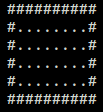
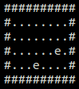
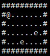
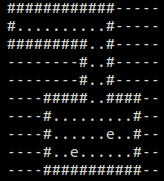
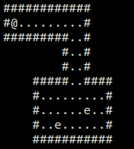

Creating Custom Maps¶
Welcome to the tutorial for creating custom maps for CotB!
How Loading Maps Works¶
All CotB maps are stored as raw text files. CotB reads each character of the map file and loads tile data. Loaded tiles are based on the characters in the map file.
The following map characters are supported:
| Char | Tile |
|---|---|
| # | Wall tile |
| . | Floor tile |
| - | Empty Space tile |
| + | Door tile |
| e | Enemy tile |
Note
The floor tile character is only by convention. CotB recognizes any character not already taken as walkable floor tiles.
Warning
The player, represented by a ‘@’ character, is always placed in the top left corner of the map. Do not put a ‘@’ character in any map files. Do not fill the top left corner with Empty Space tiles.
Creating a Simple Map¶
The following instructions will create a simple map file containing one room with some enemies:
Navigate to the /map directory in the project files (see downloads)
Create a raw text file, for example
custom_map.txtPaint a simple room with the characters listed above (see tile table). Example:
Add enemies to the map. Example:
Execute the run script in the /src directory passing the name of your map from step 2.
./run custom_map.txtResult:

Creating a Complex Map¶
Todo
Add more robust step by step guide to creating a complex map.
Creating more complex maps is also possible with the use of the Empty Space tiles (see tile table).
Example: The following map file
will be drawn to the screen as
